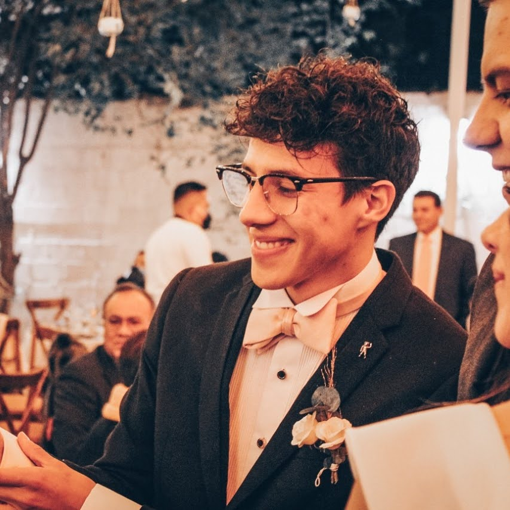

Curriculum Vitae
- Descripción personal
- Mi nombre es Sebastian Espinal, tengo 24 años y soy Mexicano, acutalmente me encuentro estudiando y emprendiendo. Amo a Dios y a mi familia.
- Eduación
- Actualmente soy estudiante de Ingeniería en Sistemas Computacionales(ISC)
- Experiencias Laborales
- Vendedor de electrónica en Chedraui
- Skills
- Habilidades de Negociación
- Habilidades administrativas
- Inglés escrito y hablado
- Java(Básico)
- C++(Básico)
- Html(Básico)
- CSS(básico)

-
Hobbies
- Orar
- Cantar
- Tocar guitarra
- Estudiar
- Jugar videojuegos
Propósito
Mi propósito de estudiar esta carrera es para poder a prender a profundidad conceptos de desarrollo web con los que pueda tener conocimiento amplio
para poder indagar en proyectos futuros ya sea personales o de terceros y poder cumplir con todos los requisitos necesarios que requiere el realizar proyectos complejos
y satisfacer todas las necesidades de los clientes.